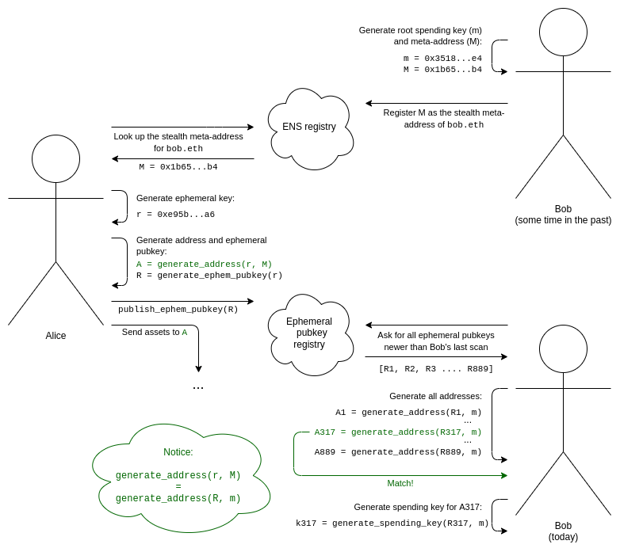
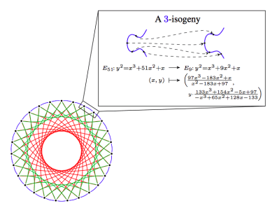
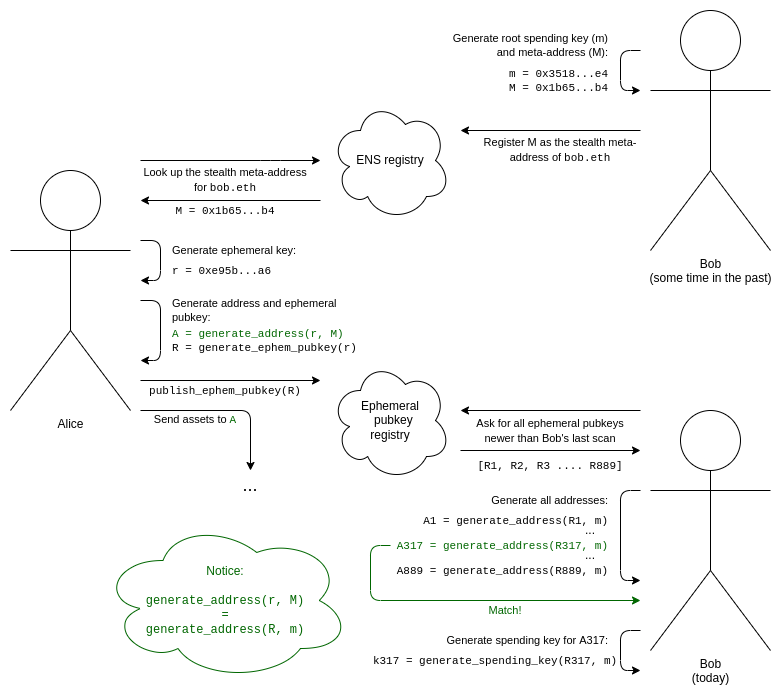
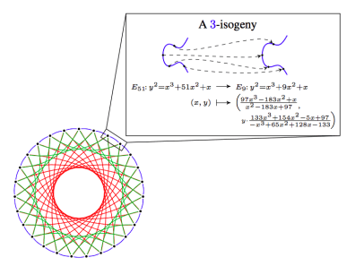

An incomplete guide to stealth addresses
2023 Jan 20
See all posts
An incomplete guide to stealth addresses
Special thanks to Ben DiFrancesco, Matt Solomon, Toni Wahrstätter and Antonio Sanso for feedback and review
One of the largest remaining challenges in the Ethereum ecosystem is privacy. By default, anything that goes onto a public blockchain is public. Increasingly, this means not just money and financial transactions, but also ENS names, POAPs, NFTs, soulbound tokens, and much more. In practice, using the entire suite of Ethereum applications involves making a significant portion of your life public for anyone to see and analyze.
Improving this state of affairs is an important problem, and this is widely recognized. So far, however, discussions on improving privacy have largely centered around one specific use case: privacy-preserving transfers (and usually self-transfers) of ETH and mainstream ERC20 tokens. This post will describe the mechanics and use cases of a different category of tool that could improve the state of privacy on Ethereum in a number of other contexts: stealth addresses.
What is a stealth address system?
Suppose that Alice wants to send Bob an asset. This could be some quantity of cryptocurrency (eg. 1 ETH, 500 RAI), or it could be an NFT. When Bob receives the asset, he does not want the entire world to know that it was he who got it. Hiding the fact that a transfer happened is impossible, especially if it's an NFT of which there is only one copy on-chain, but hiding who is the recipient may be much more viable. Alice and Bob are also lazy: they want a system where the payment workflow is exactly the same as it is today. Bob sends Alice (or registers on ENS) some kind of "address" encoding how someone can pay him, and that information alone is enough for Alice (or anyone else) to send him the asset.
Note that this is a different kind of privacy than what is provided by eg. Tornado Cash. Tornado Cash can hide transfers of mainstream fungible assets such as ETH or major ERC20s (though it's most easily useful for privately sending to yourself), but it's very weak at adding privacy to transfers of obscure ERC20s, and it cannot add privacy to NFT transfers at all.

The ordinary workflow of making a payment with cryptocurrency. We want to add privacy (no one can tell that it was Bob who received the asset), but keep the workflow the same.
Stealth addresses provide such a scheme. A stealth address is an address that can be generated by either Alice or Bob, but which can only be controlled by Bob. Bob generates and keeps secret a spending key, and uses this key to generate a stealth meta-address. He passes this meta-address to Alice (or registers it on ENS). Alice can perform a computation on this meta-address to generate a stealth address belonging to Bob. She can then send any assets she wants to send to this address, and Bob will have full control over them. Along with the transfer, she publishes some extra cryptographic data (an ephemeral pubkey) on-chain that helps Bob discover that this address belongs to him.
Another way to look at it is: stealth addresses give the same privacy properties as Bob generating a fresh address for each transaction, but without requiring any interaction from Bob.
The full workflow of a stealth address scheme can be viewed as follows:

- Bob generates his root spending key (
m) and stealth meta-address (M).
- Bob adds an ENS record to register
M as the stealth meta-address for bob.eth.
- We assume Alice knows that Bob is
bob.eth. Alice looks up his stealth meta-address M on ENS.
- Alice generates an ephemeral key that only she knows, and that she only uses once (to generate this specific stealth address).
- Alice uses an algorithm that combines her ephemeral key and Bob's meta-address to generate a stealth address. She can now send assets to this address.
- Alice also generates her ephemeral public key, and publishes it to the ephemeral public key registry (this can be done in the same transaction as the first transaction sending assets to this stealth address).
- For Bob to discover stealth addresses belonging to him, Bob needs to scan the ephemeral public key registry for the entire list of ephemeral public keys published by anyone for any reason since the last time he did the scan.
- For each ephemeral public key, Bob attempts to combine it with his root spending key to generate a stealth address, and checks if there are any assets in that address. If there are, Bob computes the spending key for that address and remembers it.
This all relies on two uses of cryptographic trickery. First, we need a pair of algorithms to generate a shared secret: one algorithm which uses Alice's secret thing (her ephemeral key) and Bob's public thing (his meta-address), and another algorithm which uses Bob's secret thing (his root spending key) and Alice's public thing (her ephemeral public key). This can be done in many ways; Diffie-Hellman key exchange was one of the results that founded the field of modern cryptography, and it accomplishes exactly this.
But a shared secret by itself is not enough: if we just generate a private key from the shared secret, then Alice and Bob could both spend from this address. We could leave it at that, leaving it up to Bob to move the funds to a new address, but this is inefficient and needlessly reduces security. So we also add a key blinding mechanism: a pair of algorithms where Bob can combine the shared secret with his root spending key, and Alice can combine the shared secret with Bob's meta-address, in such a way that Alice can generate the stealth address, and Bob can generate the spending key for that stealth address, all without creating a public link between the stealth address and Bob's meta-address (or between one stealth address and another).
Stealth addresses with elliptic curve cryptography
Stealth addresses using elliptic curve cryptography were originally introduced in the context of Bitcoin by Peter Todd in 2014. This technique works as follows (this assumes prior knowledge of basic elliptic curve cryptography; see here, here and here for some tutorials):
- Bob generates a key
m, and computes M = G * m, where G is a commonly-agreed generator point for the elliptic curve. The stealth meta-address is an encoding of M.
- Alice generates an ephemeral key
r, and publishes the ephemeral public key R = G * r.
- Alice can compute a shared secret
S = M * r, and Bob can compute the same shared secret S = m * R.
- In general, in both Bitcoin and Ethereum (including correctly-designed ERC-4337 accounts), an address is a hash containing the public key used to verify transactions from that address. So you can compute the address if you compute the public key. To compute the public key, Alice or Bob can compute
P = M + G * hash(S)
- To compute the private key for that address, Bob (and Bob alone) can compute
p = m + hash(S)
This satisfies all of our requirements above, and is remarkably simple!
There is even an EIP trying to define a stealth address standard for Ethereum today, that both supports this approach and gives space for users to develop other approaches (eg. that support Bob having separate spending and viewing keys, or that use different cryptography for quantum-resistant security). Now you might think: stealth addresses are not too difficult, the theory is already solid, and getting them adopted is just an implementation detail. The problem is, however, that there are some pretty big implementation details that a truly effective implementation would need to get through.
Stealth addresses and paying transaction fees
Suppose that someone sends you an NFT. Mindful of your privacy, they send it to a stealth address that you control. After scanning the ephem pubkeys on-chain, your wallet automatically discovers this address. You can now freely prove ownership of the NFT or transfer it to someone else. But there's a problem! That account has 0 ETH in it, and so there is no way to pay transaction fees. Even ERC-4337 token paymasters won't work, because those only work for fungible ERC20 tokens. And you can't send ETH into it from your main wallet, because then you're creating a publicly visible link.
Inserting memes of 2017-era (or older) crypto scams is an important technique that writers can use to signal erudition and respectableness, because it shows that they have been around for a long time and have refined tastes, and are not easily swayed by current-thing scam figures like SBF.
There is one "easy" way to solve the problem: just use ZK-SNARKs to transfer funds to pay for the fees! But this costs a lot of gas, an extra hundreds of thousands of gas just for a single transfer.
Another clever approach involves trusting specialized transaction aggregators ("searchers" in MEV lingo). These aggregators would allow users to pay once to purchase a set of "tickets" that can be used to pay for transactions on-chain. When a user needs to spend an NFT in a stealth address that contains nothing else, they provide the aggregator with one of the tickets, encoded using a Chaumian blinding scheme. This is the original protocol that was used in centralized privacy-preserving e-cash schemes that were proposed in the 1980s and 1990s. The searcher accepts the ticket, and repeatedly includes the transaction in their bundle for free until the transaction is successfully accepted in a block. Because the quantity of funds involved is low, and it can only be used to pay for transaction fees, trust and regulatory issues are much lower than a "full" implementation of this kind of centralized privacy-preserving e-cash.
Stealth addresses and separating spending and viewing keys
Suppose that instead of Bob just having a single master "root spending key" that can do everything, Bob wants to have a separate root spending key and viewing key. The viewing key can see all of Bob's stealth addresses, but cannot spend from them.
In the elliptic curve world, this can be solved using a very simple cryptographic trick:
- Bob's meta-address
M is now of the form (K, V), encoding G * k and G * v, where k is the spending key and v is the viewing key.
- The shared secret is now
S = V * r = v * R, where r is still Alice's ephemeral key and R is still the ephemeral public key that Alice publishes.
- The stealth address's public key is
P = K + G * hash(S) and the private key is p = k + hash(S).
Notice that the first clever cryptographic step (generating the shared secret) uses the viewing key, and the second clever cryptographic step (Alice and Bob's parallel algorithms to generate the stealth address and its private key) uses the root spending key.
This has many use cases. For example, if Bob wants to receive POAPs, then Bob could give his POAP wallet (or even a not-very-secure web interface) his viewing key to scan the chain and see all of his POAPs, without giving this interface the power to spend those POAPs.
Stealth addresses and easier scanning
To make it easier to scan the total set of ephemeral public keys, one technique is to add a view tag to each ephemeral public key. One way to do this in the above mechanism is to make the view tag be one byte of the shared secret (eg. the x-coordinate of S modulo 256, or the first byte of hash(S)).
This way, Bob only needs to do a single elliptic curve multiplication for each ephemeral public key to compute the shared secret, and only 1/256 of the time would Bob need to do more complex calculation to generate and check the full address.
Stealth addresses and quantum-resistant security
The above scheme depends on elliptic curves, which are great but are unfortunately vulnerable to quantum computers. If quantum computers become an issue, we would need to switch to quantum-resistant algorithms. There are two natural candidates for this: elliptic curve isogenies and lattices.
Elliptic curve isogenies are a very different mathematical construction based on elliptic curves, that has the linearity properties that let us do similar cryptographic tricks to what we did above, but cleverly avoids constructing cyclic groups that might be vulnerable to discrete logarithm attacks with quantum computers.
The main weakness of isogeny-based cryptography is its highly complicated underlying mathematics, and the risk that possible attacks are hidden under this complexity. Some isogeny-based protocols were broken last year, though others remain safe. The main strength of isogenies is the relatively small key sizes, and the ability to port over many kinds of elliptic curve-based approaches directly.

A 3-isogeny in CSIDH, source here.
Lattices are a very different cryptographic construction that relies on far simpler mathematics than elliptic curve isogenies, and is capable of some very powerful things (eg. fully homomorphic encryption). Stealth address schemes could be built on lattices, though designing the best one is an open problem. However, lattice-based constructions tend to have much larger key sizes.

Fully homomorphic encryption, an application of lattices. FHE could also be used to help stealth address protocols in a different way: to help Bob outsource the computation of checking the entire chain for stealth addresses containing assets without revealing his view key.
A third approach is to construct a stealth address scheme from generic black-box primitives: basic ingredients that lots of people need for other reasons. The shared secret generation part of the scheme maps directly to key exchange, a, errr... important component in public key encryption systems. The harder part is the parallel algorithms that let Alice generate only the stealth address (and not the spending key) and let Bob generate the spending key.
Unfortunately, you cannot build stealth addresses out of ingredients that are simpler than what is required to build a public-key encryption system. There is a simple proof of this: you can build a public-key encryption system out of a stealth address scheme. If Alice wants to encrypt a message to Bob, she can send N transactions, each transaction going to either a stealth address belonging to Bob or to a stealth address belonging to herself, and Bob can see which transactions he received to read the message. This is important because there are mathematical proofs that you can't do public key encryption with just hashes, whereas you can do zero-knowledge proofs with just hashes - hence, stealth addresses cannot be done with just hashes.
Here is one approach that does use relatively simple ingredients: zero knowledge proofs, which can be made out of hashes, and (key-hiding) public key encryption. Bob's meta-address is a public encryption key plus a hash h = hash(x), and his spending key is the corresponding decryption key plus x. To create a stealth address, Alice generates a value c, and publishes as her ephemeral pubkey an encryption of c readable by Bob. The address itself is an ERC-4337 account whose code verifies transactions by requiring them to come with a zero-knowledge proof proving ownership of values x and c such that k = hash(hash(x), c) (where k is part of the account's code). Knowing x and c, Bob can reconstruct the address and its code himself.

The encryption of c tells no one other than Bob anything, and k is a hash, so it reveals almost nothing about c. The wallet code itself only contains k, and c being private means that k cannot be traced back to h.
However, this requires a STARK, and STARKs are big. Ultimately, I think it is likely that a post-quantum Ethereum world will involve many applications using many starks, and so I would advocate for an aggregation protocol like that described here to combine all of these STARKs into a single recursive STARK to save space.
Stealth addresses and social recovery and multi-L2 wallets
I have for a long time been a fan of social recovery wallets: wallets that have a multisig mechanism with keys shared between some combination of institutions, your other devices and your friends, where some supermajority of those keys can recover access to your account if you lose your primary key.
However, social recovery wallets do not mix nicely with stealth addresses: if you have to recover your account (meaning, change which private key controls it), you would also have to perform some step to change the account verification logic of your N stealth wallets, and this would require N transactions, at a high cost to fees, convenience and privacy.
A similar concern exists with the interaction of social recovery and a world of multiple layer-2 protocols: if you have an account on Optimism, and on Arbitrum, and on Starknet, and on Scroll, and on Polygon, and possibly some of these rollups have a dozen parallel instances for scaling reasons and you have an account on each of those, then changing keys may be a really complex operation.
Changing the keys to many accounts across many chains is a huge effort.
One approach is to bite the bullet and accept that recoveries are rare and it's okay for them to be costly and painful. Perhaps you might have some automated software transfer the assets out into new stealth addresses at random intervals over a two-week time span to reduce the effectiveness of time-based linking. But this is far from perfect. Another approach is to secret-share the root key between the guardians instead of using smart contract recovery. However, this removes the ability to de-activate a guardian's power to help recover your account, and so is long-run risky.
A more sophisticated approach involves zero-knowledge proofs. Consider the ZKP-based scheme above, but modifying the logic as follows. Instead of the account holding k = hash(hash(x), c) directly, the account would hold a (hiding) commitment to the location of k on the chain. Spending from that account would then require providing a zero-knowledge proof that (i) you know the location on the chain that matches that commitment, and (ii) the object in that location contains some value k (which you're not revealing), and that you have some values x and c that satisfy k = hash(hash(x), c).
This allows many accounts, even across many layer-2 protocols, to be controlled by a single k value somewhere (on the base chain or on some layer-2), where changing that one value is enough to change the ownership of all your accounts, all without revealing the link between your accounts and each other.
Conclusions
Basic stealth addresses can be implemented fairly quickly today, and could be a significant boost to practical user privacy on Ethereum. They do require some work on the wallet side to support them. That said, it is my view that wallets should start moving toward a more natively multi-address model (eg. creating a new address for each application you interact with could be one option) for other privacy-related reasons as well.
However, stealth addresses do introduce some longer-term usability concerns, such as difficulty of social recovery. It is probably okay to simply accept these concerns for now, eg. by accepting that social recovery will involve either a loss of privacy or a two-week delay to slowly release the recovery transactions to the various assets (which could be handled by a third-party service). In the longer term, these problems can be solved, but the stealth address ecosystem of the long term is looking like one that would really heavily depend on zero-knowledge proofs.
An incomplete guide to stealth addresses
2023 Jan 20 See all postsSpecial thanks to Ben DiFrancesco, Matt Solomon, Toni Wahrstätter and Antonio Sanso for feedback and review
One of the largest remaining challenges in the Ethereum ecosystem is privacy. By default, anything that goes onto a public blockchain is public. Increasingly, this means not just money and financial transactions, but also ENS names, POAPs, NFTs, soulbound tokens, and much more. In practice, using the entire suite of Ethereum applications involves making a significant portion of your life public for anyone to see and analyze.
Improving this state of affairs is an important problem, and this is widely recognized. So far, however, discussions on improving privacy have largely centered around one specific use case: privacy-preserving transfers (and usually self-transfers) of ETH and mainstream ERC20 tokens. This post will describe the mechanics and use cases of a different category of tool that could improve the state of privacy on Ethereum in a number of other contexts: stealth addresses.
What is a stealth address system?
Suppose that Alice wants to send Bob an asset. This could be some quantity of cryptocurrency (eg. 1 ETH, 500 RAI), or it could be an NFT. When Bob receives the asset, he does not want the entire world to know that it was he who got it. Hiding the fact that a transfer happened is impossible, especially if it's an NFT of which there is only one copy on-chain, but hiding who is the recipient may be much more viable. Alice and Bob are also lazy: they want a system where the payment workflow is exactly the same as it is today. Bob sends Alice (or registers on ENS) some kind of "address" encoding how someone can pay him, and that information alone is enough for Alice (or anyone else) to send him the asset.
Note that this is a different kind of privacy than what is provided by eg. Tornado Cash. Tornado Cash can hide transfers of mainstream fungible assets such as ETH or major ERC20s (though it's most easily useful for privately sending to yourself), but it's very weak at adding privacy to transfers of obscure ERC20s, and it cannot add privacy to NFT transfers at all.
The ordinary workflow of making a payment with cryptocurrency. We want to add privacy (no one can tell that it was Bob who received the asset), but keep the workflow the same.
Stealth addresses provide such a scheme. A stealth address is an address that can be generated by either Alice or Bob, but which can only be controlled by Bob. Bob generates and keeps secret a spending key, and uses this key to generate a stealth meta-address. He passes this meta-address to Alice (or registers it on ENS). Alice can perform a computation on this meta-address to generate a stealth address belonging to Bob. She can then send any assets she wants to send to this address, and Bob will have full control over them. Along with the transfer, she publishes some extra cryptographic data (an ephemeral pubkey) on-chain that helps Bob discover that this address belongs to him.
Another way to look at it is: stealth addresses give the same privacy properties as Bob generating a fresh address for each transaction, but without requiring any interaction from Bob.
The full workflow of a stealth address scheme can be viewed as follows:

m) and stealth meta-address (M).Mas the stealth meta-address forbob.eth.bob.eth. Alice looks up his stealth meta-addressMon ENS.This all relies on two uses of cryptographic trickery. First, we need a pair of algorithms to generate a shared secret: one algorithm which uses Alice's secret thing (her ephemeral key) and Bob's public thing (his meta-address), and another algorithm which uses Bob's secret thing (his root spending key) and Alice's public thing (her ephemeral public key). This can be done in many ways; Diffie-Hellman key exchange was one of the results that founded the field of modern cryptography, and it accomplishes exactly this.
But a shared secret by itself is not enough: if we just generate a private key from the shared secret, then Alice and Bob could both spend from this address. We could leave it at that, leaving it up to Bob to move the funds to a new address, but this is inefficient and needlessly reduces security. So we also add a key blinding mechanism: a pair of algorithms where Bob can combine the shared secret with his root spending key, and Alice can combine the shared secret with Bob's meta-address, in such a way that Alice can generate the stealth address, and Bob can generate the spending key for that stealth address, all without creating a public link between the stealth address and Bob's meta-address (or between one stealth address and another).
Stealth addresses with elliptic curve cryptography
Stealth addresses using elliptic curve cryptography were originally introduced in the context of Bitcoin by Peter Todd in 2014. This technique works as follows (this assumes prior knowledge of basic elliptic curve cryptography; see here, here and here for some tutorials):
m, and computesM = G * m, whereGis a commonly-agreed generator point for the elliptic curve. The stealth meta-address is an encoding ofM.r, and publishes the ephemeral public keyR = G * r.S = M * r, and Bob can compute the same shared secretS = m * R.P = M + G * hash(S)p = m + hash(S)This satisfies all of our requirements above, and is remarkably simple!
There is even an EIP trying to define a stealth address standard for Ethereum today, that both supports this approach and gives space for users to develop other approaches (eg. that support Bob having separate spending and viewing keys, or that use different cryptography for quantum-resistant security). Now you might think: stealth addresses are not too difficult, the theory is already solid, and getting them adopted is just an implementation detail. The problem is, however, that there are some pretty big implementation details that a truly effective implementation would need to get through.
Stealth addresses and paying transaction fees
Suppose that someone sends you an NFT. Mindful of your privacy, they send it to a stealth address that you control. After scanning the ephem pubkeys on-chain, your wallet automatically discovers this address. You can now freely prove ownership of the NFT or transfer it to someone else. But there's a problem! That account has 0 ETH in it, and so there is no way to pay transaction fees. Even ERC-4337 token paymasters won't work, because those only work for fungible ERC20 tokens. And you can't send ETH into it from your main wallet, because then you're creating a publicly visible link.
Inserting memes of 2017-era (or older) crypto scams is an important technique that writers can use to signal erudition and respectableness, because it shows that they have been around for a long time and have refined tastes, and are not easily swayed by current-thing scam figures like SBF.
There is one "easy" way to solve the problem: just use ZK-SNARKs to transfer funds to pay for the fees! But this costs a lot of gas, an extra hundreds of thousands of gas just for a single transfer.
Another clever approach involves trusting specialized transaction aggregators ("searchers" in MEV lingo). These aggregators would allow users to pay once to purchase a set of "tickets" that can be used to pay for transactions on-chain. When a user needs to spend an NFT in a stealth address that contains nothing else, they provide the aggregator with one of the tickets, encoded using a Chaumian blinding scheme. This is the original protocol that was used in centralized privacy-preserving e-cash schemes that were proposed in the 1980s and 1990s. The searcher accepts the ticket, and repeatedly includes the transaction in their bundle for free until the transaction is successfully accepted in a block. Because the quantity of funds involved is low, and it can only be used to pay for transaction fees, trust and regulatory issues are much lower than a "full" implementation of this kind of centralized privacy-preserving e-cash.
Stealth addresses and separating spending and viewing keys
Suppose that instead of Bob just having a single master "root spending key" that can do everything, Bob wants to have a separate root spending key and viewing key. The viewing key can see all of Bob's stealth addresses, but cannot spend from them.
In the elliptic curve world, this can be solved using a very simple cryptographic trick:
Mis now of the form(K, V), encodingG * kandG * v, wherekis the spending key andvis the viewing key.S = V * r = v * R, whereris still Alice's ephemeral key andRis still the ephemeral public key that Alice publishes.P = K + G * hash(S)and the private key isp = k + hash(S).Notice that the first clever cryptographic step (generating the shared secret) uses the viewing key, and the second clever cryptographic step (Alice and Bob's parallel algorithms to generate the stealth address and its private key) uses the root spending key.
This has many use cases. For example, if Bob wants to receive POAPs, then Bob could give his POAP wallet (or even a not-very-secure web interface) his viewing key to scan the chain and see all of his POAPs, without giving this interface the power to spend those POAPs.
Stealth addresses and easier scanning
To make it easier to scan the total set of ephemeral public keys, one technique is to add a view tag to each ephemeral public key. One way to do this in the above mechanism is to make the view tag be one byte of the shared secret (eg. the x-coordinate of
Smodulo 256, or the first byte ofhash(S)).This way, Bob only needs to do a single elliptic curve multiplication for each ephemeral public key to compute the shared secret, and only 1/256 of the time would Bob need to do more complex calculation to generate and check the full address.
Stealth addresses and quantum-resistant security
The above scheme depends on elliptic curves, which are great but are unfortunately vulnerable to quantum computers. If quantum computers become an issue, we would need to switch to quantum-resistant algorithms. There are two natural candidates for this: elliptic curve isogenies and lattices.
Elliptic curve isogenies are a very different mathematical construction based on elliptic curves, that has the linearity properties that let us do similar cryptographic tricks to what we did above, but cleverly avoids constructing cyclic groups that might be vulnerable to discrete logarithm attacks with quantum computers.
The main weakness of isogeny-based cryptography is its highly complicated underlying mathematics, and the risk that possible attacks are hidden under this complexity. Some isogeny-based protocols were broken last year, though others remain safe. The main strength of isogenies is the relatively small key sizes, and the ability to port over many kinds of elliptic curve-based approaches directly.

A 3-isogeny in CSIDH, source here.
Lattices are a very different cryptographic construction that relies on far simpler mathematics than elliptic curve isogenies, and is capable of some very powerful things (eg. fully homomorphic encryption). Stealth address schemes could be built on lattices, though designing the best one is an open problem. However, lattice-based constructions tend to have much larger key sizes.
Fully homomorphic encryption, an application of lattices. FHE could also be used to help stealth address protocols in a different way: to help Bob outsource the computation of checking the entire chain for stealth addresses containing assets without revealing his view key.
A third approach is to construct a stealth address scheme from generic black-box primitives: basic ingredients that lots of people need for other reasons. The shared secret generation part of the scheme maps directly to key exchange, a, errr... important component in public key encryption systems. The harder part is the parallel algorithms that let Alice generate only the stealth address (and not the spending key) and let Bob generate the spending key.
Unfortunately, you cannot build stealth addresses out of ingredients that are simpler than what is required to build a public-key encryption system. There is a simple proof of this: you can build a public-key encryption system out of a stealth address scheme. If Alice wants to encrypt a message to Bob, she can send N transactions, each transaction going to either a stealth address belonging to Bob or to a stealth address belonging to herself, and Bob can see which transactions he received to read the message. This is important because there are mathematical proofs that you can't do public key encryption with just hashes, whereas you can do zero-knowledge proofs with just hashes - hence, stealth addresses cannot be done with just hashes.
Here is one approach that does use relatively simple ingredients: zero knowledge proofs, which can be made out of hashes, and (key-hiding) public key encryption. Bob's meta-address is a public encryption key plus a hash
h = hash(x), and his spending key is the corresponding decryption key plusx. To create a stealth address, Alice generates a valuec, and publishes as her ephemeral pubkey an encryption ofcreadable by Bob. The address itself is an ERC-4337 account whose code verifies transactions by requiring them to come with a zero-knowledge proof proving ownership of valuesxandcsuch thatk = hash(hash(x), c)(wherekis part of the account's code). Knowingxandc, Bob can reconstruct the address and its code himself.The encryption of
ctells no one other than Bob anything, andkis a hash, so it reveals almost nothing aboutc. The wallet code itself only containsk, andcbeing private means thatkcannot be traced back toh.However, this requires a STARK, and STARKs are big. Ultimately, I think it is likely that a post-quantum Ethereum world will involve many applications using many starks, and so I would advocate for an aggregation protocol like that described here to combine all of these STARKs into a single recursive STARK to save space.
Stealth addresses and social recovery and multi-L2 wallets
I have for a long time been a fan of social recovery wallets: wallets that have a multisig mechanism with keys shared between some combination of institutions, your other devices and your friends, where some supermajority of those keys can recover access to your account if you lose your primary key.
However, social recovery wallets do not mix nicely with stealth addresses: if you have to recover your account (meaning, change which private key controls it), you would also have to perform some step to change the account verification logic of your N stealth wallets, and this would require N transactions, at a high cost to fees, convenience and privacy.
A similar concern exists with the interaction of social recovery and a world of multiple layer-2 protocols: if you have an account on Optimism, and on Arbitrum, and on Starknet, and on Scroll, and on Polygon, and possibly some of these rollups have a dozen parallel instances for scaling reasons and you have an account on each of those, then changing keys may be a really complex operation.
Changing the keys to many accounts across many chains is a huge effort.
One approach is to bite the bullet and accept that recoveries are rare and it's okay for them to be costly and painful. Perhaps you might have some automated software transfer the assets out into new stealth addresses at random intervals over a two-week time span to reduce the effectiveness of time-based linking. But this is far from perfect. Another approach is to secret-share the root key between the guardians instead of using smart contract recovery. However, this removes the ability to de-activate a guardian's power to help recover your account, and so is long-run risky.
A more sophisticated approach involves zero-knowledge proofs. Consider the ZKP-based scheme above, but modifying the logic as follows. Instead of the account holding
k = hash(hash(x), c)directly, the account would hold a (hiding) commitment to the location ofkon the chain. Spending from that account would then require providing a zero-knowledge proof that (i) you know the location on the chain that matches that commitment, and (ii) the object in that location contains some valuek(which you're not revealing), and that you have some valuesxandcthat satisfyk = hash(hash(x), c).This allows many accounts, even across many layer-2 protocols, to be controlled by a single
kvalue somewhere (on the base chain or on some layer-2), where changing that one value is enough to change the ownership of all your accounts, all without revealing the link between your accounts and each other.Conclusions
Basic stealth addresses can be implemented fairly quickly today, and could be a significant boost to practical user privacy on Ethereum. They do require some work on the wallet side to support them. That said, it is my view that wallets should start moving toward a more natively multi-address model (eg. creating a new address for each application you interact with could be one option) for other privacy-related reasons as well.
However, stealth addresses do introduce some longer-term usability concerns, such as difficulty of social recovery. It is probably okay to simply accept these concerns for now, eg. by accepting that social recovery will involve either a loss of privacy or a two-week delay to slowly release the recovery transactions to the various assets (which could be handled by a third-party service). In the longer term, these problems can be solved, but the stealth address ecosystem of the long term is looking like one that would really heavily depend on zero-knowledge proofs.